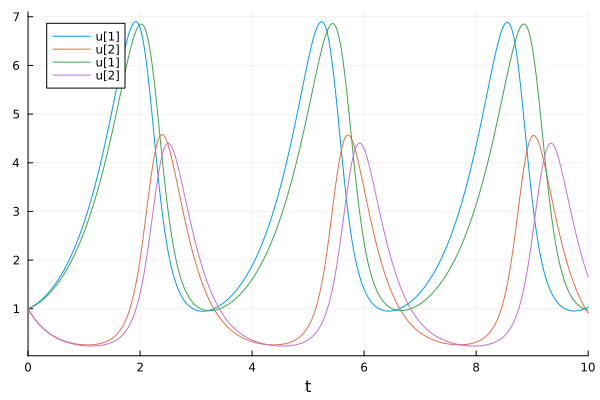
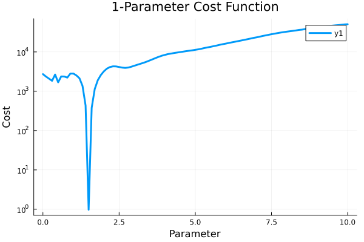
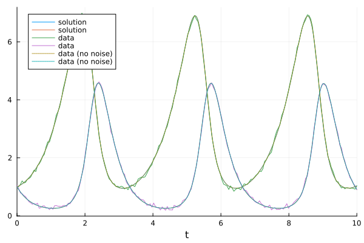

Getting Started with Optimization-Based ODE Parameter Estimation
In this tutorial, we will showcase how to estimate the parameters of an ordinary differential equation using DiffEqParamEstim.jl. DiffEqParamEstim.jl is a high-level tool that makes common parameter estimation tasks simple. Here, we will show how to use its cost function generation to estimate the parameters of the Lotka-Volterra equation against simulated data.
Installation
First, we will make sure DiffEqParamEstim.jl is installed correctly. To do this, we use the Julia package REPL, opened by typing ] in the REPL and seeing pkg> appear in blue. Then we type: add DiffEqParamEstim and hit enter. This will run the package management sequence, and we will be good to go.
Required Dependencies
| Module | Description |
|---|---|
| DifferentialEquations.jl | The numerical differential equation solver package |
| RecursiveArrayTools.jl | Tooling for recursive arrays like vector of arrays |
| Plots.jl | Tooling for plotting and visualization |
| Zygote.jl | Tooling for reverse-mode automatic differentiation (gradient calculations) |
| Optimization.jl | The numerical optimization package |
| OptimizationOptimJL.jl | The Optim optimizers we will use for local optimization |
| OptimizationBBO.jl | The BlackBoxOptim optimizers we will use for global optimization |
Parameter Estimation in the Lotka-Volterra Equation: 1 Parameter Case
We choose to optimize the parameters on the Lotka-Volterra equation. Let's start by defining the equation as a function with a single parameter p=[a]:
using DifferentialEquations, RecursiveArrayTools, Plots, DiffEqParamEstim
using Optimization, ForwardDiff, OptimizationOptimJL, OptimizationBBO
using Random
using SciMLLogging: None
function f(du, u, p, t)
a = p[]
du[1] = dx = a * u[1] - u[1] * u[2]
du[2] = dy = -3 * u[2] + u[1] * u[2]
end
u0 = [1.0; 1.0]
tspan = (0.0, 10.0)
p = [1.5]
prob = ODEProblem(f, u0, tspan, p)ODEProblem with uType Vector{Float64} and tType Float64. In-place: true
Non-trivial mass matrix: false
timespan: (0.0, 10.0)
u0: 2-element Vector{Float64}:
1.0
1.0Generating Synthetic Data
We create synthetic data using the numerical result with a=1.5 and additive white gaussian noise with a standard deviation of 0.05:
sol = solve(prob, Tsit5())
t = collect(range(0, stop = 10, length = 200))
using RecursiveArrayTools # for VectorOfArray
Random.seed!(1234)
randomized = VectorOfArray([(sol(t[i]) + 0.05randn(2)) for i in 1:length(t)])
data = convert(Array, randomized)2×200 Matrix{Float64}:
0.982014 1.00696 1.08245 1.20318 … 0.940458 0.919452 1.03247
1.05436 0.940942 0.786001 0.761103 1.10772 1.03599 0.896954Here, we used VectorOfArray from RecursiveArrayTools.jl to turn the result of an ODE into a matrix.
If we plot the solution with the parameter at a=1.42, we get the following:
newprob = remake(prob, p = [1.42])
newsol = solve(newprob, Tsit5())
plot(sol)
plot!(newsol)
Notice that after one period, this solution begins to drift very far off: this problem is sensitive to the choice of a.
To build the objective function for Optim.jl, we simply call the build_loss_objective function:
cost_function = build_loss_objective(prob, Tsit5(), L2Loss(t, data),
Optimization.AutoForwardDiff(),
maxiters = 10000, verbose = None())SciMLBase.OptimizationFunction{true, ADTypes.AutoForwardDiff{nothing, Nothing}, DiffEqParamEstim.var"#37#38"{Nothing, typeof(DiffEqParamEstim.STANDARD_PROB_GENERATOR), Base.Pairs{Symbol, Any, Nothing, @NamedTuple{maxiters::Int64, verbose::SciMLLogging.None}}, SciMLBase.ODEProblem{Vector{Float64}, Tuple{Float64, Float64}, true, Vector{Float64}, SciMLBase.ODEFunction{true, SciMLBase.AutoSpecialize, typeof(Main.f), LinearAlgebra.UniformScaling{Bool}, Nothing, Nothing, Nothing, Nothing, Nothing, Nothing, Nothing, Nothing, Nothing, Nothing, Nothing, Nothing, typeof(SciMLBase.DEFAULT_OBSERVED), Nothing, Nothing, Nothing, Nothing}, Base.Pairs{Symbol, Union{}, Nothing, @NamedTuple{}}, SciMLBase.StandardODEProblem}, OrdinaryDiffEqTsit5.Tsit5{typeof(OrdinaryDiffEqCore.trivial_limiter!), typeof(OrdinaryDiffEqCore.trivial_limiter!), FastBroadcast.Serial}, L2Loss{Vector{Float64}, Matrix{Float64}, Nothing, Nothing, Nothing, Nothing}, Nothing, Tuple{}}, Nothing, Nothing, Nothing, Nothing, Nothing, Nothing, Nothing, Nothing, Nothing, Nothing, Nothing, Nothing, Nothing, typeof(SciMLBase.DEFAULT_OBSERVED_NO_TIME), Nothing, Nothing, Nothing, Nothing, Nothing, Nothing, Nothing, Nothing, Nothing, Nothing}(DiffEqParamEstim.var"#37#38"{Nothing, typeof(DiffEqParamEstim.STANDARD_PROB_GENERATOR), Base.Pairs{Symbol, Any, Nothing, @NamedTuple{maxiters::Int64, verbose::SciMLLogging.None}}, SciMLBase.ODEProblem{Vector{Float64}, Tuple{Float64, Float64}, true, Vector{Float64}, SciMLBase.ODEFunction{true, SciMLBase.AutoSpecialize, typeof(Main.f), LinearAlgebra.UniformScaling{Bool}, Nothing, Nothing, Nothing, Nothing, Nothing, Nothing, Nothing, Nothing, Nothing, Nothing, Nothing, Nothing, typeof(SciMLBase.DEFAULT_OBSERVED), Nothing, Nothing, Nothing, Nothing}, Base.Pairs{Symbol, Union{}, Nothing, @NamedTuple{}}, SciMLBase.StandardODEProblem}, OrdinaryDiffEqTsit5.Tsit5{typeof(OrdinaryDiffEqCore.trivial_limiter!), typeof(OrdinaryDiffEqCore.trivial_limiter!), FastBroadcast.Serial}, L2Loss{Vector{Float64}, Matrix{Float64}, Nothing, Nothing, Nothing, Nothing}, Nothing, Tuple{}}(nothing, DiffEqParamEstim.STANDARD_PROB_GENERATOR, Base.Pairs{Symbol, Any, Nothing, @NamedTuple{maxiters::Int64, verbose::SciMLLogging.None}}(:maxiters => 10000, :verbose => SciMLLogging.None()), SciMLBase.ODEProblem{Vector{Float64}, Tuple{Float64, Float64}, true, Vector{Float64}, SciMLBase.ODEFunction{true, SciMLBase.AutoSpecialize, typeof(Main.f), LinearAlgebra.UniformScaling{Bool}, Nothing, Nothing, Nothing, Nothing, Nothing, Nothing, Nothing, Nothing, Nothing, Nothing, Nothing, Nothing, typeof(SciMLBase.DEFAULT_OBSERVED), Nothing, Nothing, Nothing, Nothing}, Base.Pairs{Symbol, Union{}, Nothing, @NamedTuple{}}, SciMLBase.StandardODEProblem}(SciMLBase.ODEFunction{true, SciMLBase.AutoSpecialize, typeof(Main.f), LinearAlgebra.UniformScaling{Bool}, Nothing, Nothing, Nothing, Nothing, Nothing, Nothing, Nothing, Nothing, Nothing, Nothing, Nothing, Nothing, typeof(SciMLBase.DEFAULT_OBSERVED), Nothing, Nothing, Nothing, Nothing}(Main.f, LinearAlgebra.UniformScaling{Bool}(true), nothing, nothing, nothing, nothing, nothing, nothing, nothing, nothing, nothing, nothing, nothing, nothing, SciMLBase.DEFAULT_OBSERVED, nothing, nothing, nothing, nothing), [1.0, 1.0], (0.0, 10.0), [1.5], Base.Pairs{Symbol, Union{}, Nothing, @NamedTuple{}}(), SciMLBase.StandardODEProblem()), OrdinaryDiffEqTsit5.Tsit5{typeof(OrdinaryDiffEqCore.trivial_limiter!), typeof(OrdinaryDiffEqCore.trivial_limiter!), FastBroadcast.Serial}(OrdinaryDiffEqCore.trivial_limiter!, OrdinaryDiffEqCore.trivial_limiter!, FastBroadcast.Serial()), L2Loss{Vector{Float64}, Matrix{Float64}, Nothing, Nothing, Nothing, Nothing}([0.0, 0.05025125628140704, 0.10050251256281408, 0.1507537688442211, 0.20100502512562815, 0.25125628140703515, 0.3015075376884422, 0.35175879396984927, 0.4020100502512563, 0.45226130653266333 … 9.547738693467336, 9.597989949748744, 9.64824120603015, 9.698492462311558, 9.748743718592964, 9.798994974874372, 9.849246231155778, 9.899497487437186, 9.949748743718592, 10.0], [0.9820135546588259 1.006961697096501 … 0.9194523887245257 1.0324677798465753; 1.0543604246214293 0.9409422107863 … 1.0359912172391588 0.8969535852162148], nothing, nothing, nothing, nothing, nothing), nothing, ()), ADTypes.AutoForwardDiff(), nothing, nothing, nothing, nothing, nothing, nothing, nothing, nothing, nothing, nothing, nothing, nothing, nothing, SciMLBase.DEFAULT_OBSERVED_NO_TIME, nothing, nothing, nothing, nothing, nothing, nothing, nothing, nothing, nothing, nothing)This objective function internally is calling the ODE solver to get solutions to test against the data. The keyword arguments are passed directly to the solver. Note that we set maxiters in a way that causes the differential equation solvers to error more quickly when in bad regions of the parameter space, speeding up the process. If the integrator stops early (due to divergence), then those parameters are given an infinite loss, and thus this is a quick way to avoid bad parameters. We set verbose = None() (from SciMLLogging.jl) to silence the solver because this divergence can get noisy. The Optimization.AutoForwardDiff() is a choice of automatic differentiation, i.e., how the gradients are calculated. For more information on this choice, see the automatic differentiation choice API.
A good rule of thumb is to use Optimization.AutoForwardDiff() for less than 100 parameters + states, and Optimization.AutoZygote() for more.
Before optimizing, let's visualize our cost function by plotting it for a range of parameter values:
vals = 0.0:0.1:10.0
plot(vals, [cost_function(i) for i in vals], yscale = :log10,
xaxis = "Parameter", yaxis = "Cost", title = "1-Parameter Cost Function",
lw = 3)
Here we see that there is a very well-defined minimum in our cost function at the real parameter (because this is where the solution almost exactly fits the dataset).
Now we can use the BFGS algorithm to optimize the parameter starting at a=1.42. We do this by creating an optimization problem and solving that with BFGS():
optprob = Optimization.OptimizationProblem(cost_function, [1.42])
optsol = solve(optprob, BFGS())
@assert isapprox(optsol.u, p; atol = 0.01)Now let's see how well the fit performed:
newprob = remake(prob, p = optsol.u)
newsol = solve(newprob, Tsit5())
plot(newsol, label="solution")
plot!(t, data', label="data")
plot!(sol, label="data (no noise)", linestyle=:dot)
Note that some algorithms may be sensitive to the initial condition. For more details on using Optim.jl, see the documentation for Optim.jl.
Adding Bounds Constraints
We can improve our solution by noting that the Lotka-Volterra equation requires that the parameters are positive. Thus, following the Optimization.jl documentation we can add box constraints to ensure the optimizer only checks between 0.0 and 3.0 which improves the efficiency of our algorithm. We pass the lb and ub keyword arguments to the OptimizationProblem to pass these bounds to the optimizer:
lower = [0.0]
upper = [3.0]
optprob = Optimization.OptimizationProblem(cost_function, [1.42], lb = lower, ub = upper)
result = solve(optprob, BFGS())
@assert isapprox(result.u, p; atol = 0.01)Estimating Multiple Parameters Simultaneously
Lastly, we can use the same tools to estimate multiple parameters simultaneously. Let's use the Lotka-Volterra equation with all parameters free:
function f2(du, u, p, t)
du[1] = dx = p[1] * u[1] - p[2] * u[1] * u[2]
du[2] = dy = -p[3] * u[2] + p[4] * u[1] * u[2]
end
u0 = [1.0; 1.0]
tspan = (0.0, 10.0)
p = [1.5, 1.0, 3.0, 1.0]
prob = ODEProblem(f2, u0, tspan, p)ODEProblem with uType Vector{Float64} and tType Float64. In-place: true
Non-trivial mass matrix: false
timespan: (0.0, 10.0)
u0: 2-element Vector{Float64}:
1.0
1.0We can build an objective function and solve the multiple parameter version just as before:
cost_function = build_loss_objective(prob, Tsit5(), L2Loss(t, data),
Optimization.AutoForwardDiff(),
maxiters = 10000, verbose = None())
optprob = Optimization.OptimizationProblem(cost_function, [1.3, 0.8, 2.8, 1.2])
result_bfgs = solve(optprob, BFGS())
@assert isapprox(result_bfgs.u, p; atol = 0.05)Alternative Cost Functions for Increased Robustness
The build_loss_objective with L2Loss is the most naive approach for parameter estimation. There are many others.
We can also use First-Differences in L2Loss by passing the kwarg differ_weight which decides the contribution of the differencing loss to the total loss.
cost_function = build_loss_objective(prob, Tsit5(),
L2Loss(t, data, differ_weight = 0.3,
data_weight = 0.7),
Optimization.AutoForwardDiff(),
maxiters = 10000, verbose = None())
optprob = Optimization.OptimizationProblem(cost_function, [1.3, 0.8, 2.8, 1.2])
result_bfgs = solve(optprob, BFGS())
@assert isapprox(result_bfgs.u, p; atol = 0.05)We can also use Multiple Shooting method by creating a multiple_shooting_objective
function ms_f1(du, u, p, t)
du[1] = p[1] * u[1] - p[2] * u[1] * u[2]
du[2] = -3.0 * u[2] + u[1] * u[2]
end
ms_u0 = [1.0; 1.0]
tspan = (0.0, 10.0)
ms_p = [1.5, 1.0]
ms_prob = ODEProblem(ms_f1, ms_u0, tspan, ms_p)
t = collect(range(0, stop = 10, length = 200))
data = Array(solve(ms_prob, Tsit5(), saveat = t, abstol = 1e-12, reltol = 1e-12))
bound = Tuple{Float64, Float64}[(0, 10), (0, 10), (
0, 10), (0, 10),
(0, 10), (0, 10), (0, 10), (
0, 10),
(0, 10), (0, 10), (0, 10), (0, 10),
(
0, 10), (0, 10), (0, 10), (0, 10), (0, 10), (
0, 10)]
ms_obj = multiple_shooting_objective(ms_prob, Tsit5(), L2Loss(t, data),
Optimization.AutoForwardDiff();
discontinuity_weight = 1.0, abstol = 1e-12,
reltol = 1e-12)SciMLBase.OptimizationFunction{true, ADTypes.AutoForwardDiff{nothing, Nothing}, DiffEqParamEstim.var"#55#56"{Nothing, Float64, DiffEqParamEstim.var"#2#3", Base.Pairs{Symbol, Float64, Nothing, @NamedTuple{abstol::Float64, reltol::Float64}}, SciMLBase.ODEProblem{Vector{Float64}, Tuple{Float64, Float64}, true, Vector{Float64}, SciMLBase.ODEFunction{true, SciMLBase.AutoSpecialize, typeof(Main.ms_f1), LinearAlgebra.UniformScaling{Bool}, Nothing, Nothing, Nothing, Nothing, Nothing, Nothing, Nothing, Nothing, Nothing, Nothing, Nothing, Nothing, typeof(SciMLBase.DEFAULT_OBSERVED), Nothing, Nothing, Nothing, Nothing}, Base.Pairs{Symbol, Union{}, Nothing, @NamedTuple{}}, SciMLBase.StandardODEProblem}, OrdinaryDiffEqTsit5.Tsit5{typeof(OrdinaryDiffEqCore.trivial_limiter!), typeof(OrdinaryDiffEqCore.trivial_limiter!), FastBroadcast.Serial}, L2Loss{Vector{Float64}, Matrix{Float64}, Nothing, Nothing, Nothing, Nothing}, Nothing}, Nothing, Nothing, Nothing, Nothing, Nothing, Nothing, Nothing, Nothing, Nothing, Nothing, Nothing, Nothing, Nothing, typeof(SciMLBase.DEFAULT_OBSERVED_NO_TIME), Nothing, Nothing, Nothing, Nothing, Nothing, Nothing, Nothing, Nothing, Nothing, Nothing}(DiffEqParamEstim.var"#55#56"{Nothing, Float64, DiffEqParamEstim.var"#2#3", Base.Pairs{Symbol, Float64, Nothing, @NamedTuple{abstol::Float64, reltol::Float64}}, SciMLBase.ODEProblem{Vector{Float64}, Tuple{Float64, Float64}, true, Vector{Float64}, SciMLBase.ODEFunction{true, SciMLBase.AutoSpecialize, typeof(Main.ms_f1), LinearAlgebra.UniformScaling{Bool}, Nothing, Nothing, Nothing, Nothing, Nothing, Nothing, Nothing, Nothing, Nothing, Nothing, Nothing, Nothing, typeof(SciMLBase.DEFAULT_OBSERVED), Nothing, Nothing, Nothing, Nothing}, Base.Pairs{Symbol, Union{}, Nothing, @NamedTuple{}}, SciMLBase.StandardODEProblem}, OrdinaryDiffEqTsit5.Tsit5{typeof(OrdinaryDiffEqCore.trivial_limiter!), typeof(OrdinaryDiffEqCore.trivial_limiter!), FastBroadcast.Serial}, L2Loss{Vector{Float64}, Matrix{Float64}, Nothing, Nothing, Nothing, Nothing}, Nothing}(nothing, 1.0, DiffEqParamEstim.var"#2#3"(), Base.Pairs(:abstol => 1.0e-12, :reltol => 1.0e-12), SciMLBase.ODEProblem{Vector{Float64}, Tuple{Float64, Float64}, true, Vector{Float64}, SciMLBase.ODEFunction{true, SciMLBase.AutoSpecialize, typeof(Main.ms_f1), LinearAlgebra.UniformScaling{Bool}, Nothing, Nothing, Nothing, Nothing, Nothing, Nothing, Nothing, Nothing, Nothing, Nothing, Nothing, Nothing, typeof(SciMLBase.DEFAULT_OBSERVED), Nothing, Nothing, Nothing, Nothing}, Base.Pairs{Symbol, Union{}, Nothing, @NamedTuple{}}, SciMLBase.StandardODEProblem}(SciMLBase.ODEFunction{true, SciMLBase.AutoSpecialize, typeof(Main.ms_f1), LinearAlgebra.UniformScaling{Bool}, Nothing, Nothing, Nothing, Nothing, Nothing, Nothing, Nothing, Nothing, Nothing, Nothing, Nothing, Nothing, typeof(SciMLBase.DEFAULT_OBSERVED), Nothing, Nothing, Nothing, Nothing}(Main.ms_f1, LinearAlgebra.UniformScaling{Bool}(true), nothing, nothing, nothing, nothing, nothing, nothing, nothing, nothing, nothing, nothing, nothing, nothing, SciMLBase.DEFAULT_OBSERVED, nothing, nothing, nothing, nothing), [1.0, 1.0], (0.0, 10.0), [1.5, 1.0], Base.Pairs{Symbol, Union{}, Nothing, @NamedTuple{}}(), SciMLBase.StandardODEProblem()), OrdinaryDiffEqTsit5.Tsit5{typeof(OrdinaryDiffEqCore.trivial_limiter!), typeof(OrdinaryDiffEqCore.trivial_limiter!), FastBroadcast.Serial}(OrdinaryDiffEqCore.trivial_limiter!, OrdinaryDiffEqCore.trivial_limiter!, FastBroadcast.Serial()), L2Loss{Vector{Float64}, Matrix{Float64}, Nothing, Nothing, Nothing, Nothing}([0.0, 0.05025125628140704, 0.10050251256281408, 0.1507537688442211, 0.20100502512562815, 0.25125628140703515, 0.3015075376884422, 0.35175879396984927, 0.4020100502512563, 0.45226130653266333 … 9.547738693467336, 9.597989949748744, 9.64824120603015, 9.698492462311558, 9.748743718592964, 9.798994974874372, 9.849246231155778, 9.899497487437186, 9.949748743718592, 10.0], [1.0 1.0279411776245886 … 0.9986965102411115 1.0263447675750625; 1.0 0.9049967222250189 … 1.00526042381881 0.9096910781360582], nothing, nothing, nothing, nothing, nothing), nothing), ADTypes.AutoForwardDiff(), nothing, nothing, nothing, nothing, nothing, nothing, nothing, nothing, nothing, nothing, nothing, nothing, nothing, SciMLBase.DEFAULT_OBSERVED_NO_TIME, nothing, nothing, nothing, nothing, nothing, nothing, nothing, nothing, nothing, nothing)This creates the objective function that can be passed to an optimizer, from which we can then get the parameter values and the initial values of the short time periods, keeping in mind the indexing. Now we mix this with a global optimization method to improve robustness even more:
optprob = Optimization.OptimizationProblem(ms_obj, zeros(18), lb = first.(bound),
ub = last.(bound))
Random.seed!(1234)
optsol_ms = solve(optprob, BBO_adaptive_de_rand_1_bin_radiuslimited(), maxiters = 21_000)
@assert isapprox(optsol_ms.u[(end - 1):end], ms_p; atol = 0.1)┌ Warning: Verbosity toggle: dt_epsilon
│ At t=2.483823224645633, dt was forced below floating point epsilon 4.440892098500626e-16. Aborting. There is either an error in your model specification or the true solution is unstable (or it cannot be represented in Float64 precision).
│
│ Diagnostics:
│
│ State Analysis:
│ All 2 state variables are non-finite (NaN/Inf)
│
│ Error Analysis:
│ step error estimate EEst = NaN (a step is accepted when EEst <= 1)
│ 2 of 2 weighted residuals are non-finite (NaN/Inf)
│ largest contributors to EEst = internalnorm(atmp), where atmp is the tolerance-weighted local error per state component:
│ atmp[1] = NaN, u[1] = NaN, uprev[1] = 3406
│ atmp[2] = NaN, u[2] = NaN, uprev[2] = 7.54e+303
└ @ DiffEqBase ~/.julia/packages/DiffEqBase/xEDij/src/check_error.jl:37optsol_ms.u[(end - 1):end]2-element Vector{Float64}:
1.5214797040024586
1.0057205145675576Here as our model had 2 parameters, we look at the last 2 indexes of result to get our parameter values and the rest of the values are the initial values of the shorter timespans as described in the reference section. We can also use a gradient-based optimizer with the multiple shooting objective.
optsol_ms = solve(optprob, BFGS())
@assert isapprox(optsol_ms.u[(end - 1):end], ms_p; atol = 0.05)
optsol_ms.u[(end - 1):end]2-element Vector{Float64}:
1.5000000000736553
1.0000000000117202The objective function for the Two Stage method can be created and passed to an optimizer as
two_stage_obj = two_stage_objective(ms_prob, t, data, Optimization.AutoForwardDiff())
optprob = Optimization.OptimizationProblem(two_stage_obj, [1.3, 0.8])
result = solve(optprob, Optim.BFGS())
@assert isapprox(result.u, ms_p; atol = 0.05)The default kernel used in the method is Epanechnikov, available others are Uniform, Triangular, Quartic, Triweight, Tricube, Gaussian, Cosine, Logistic and Sigmoid, this can be passed by the kernel keyword argument. loss_func keyword argument can be used to pass the loss function (cost function) you want to use and passing a valid adtype argument enables Auto Differentiation.
Conclusion
There are many more choices for how to improve the robustness of a parameter estimation. With all of these tools, one likely should never do the simple “solve it with p and check the L2 loss”. Instead, we should use these tricks to improve the loss landscape and increase the ability for optimizers to find globally the best parameters.